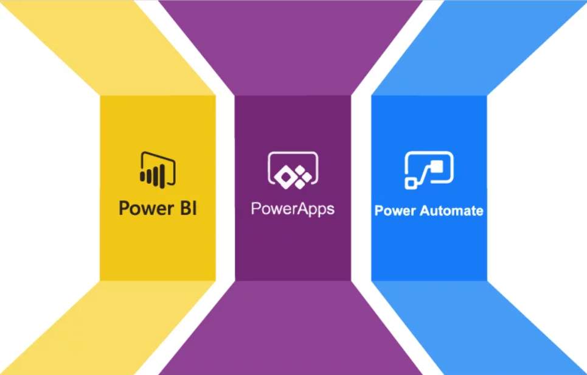

This project analyzes the financial and behavioral impact of increasing the initial loan amount offered to new customers from Ksh 5,000 to Ksh 7,000. Using SQL Server for data analysis and BI tools for visualization, the analysis compares repayment behavior, default risk, repeat borrowing, and profitability between the two customer cohorts. The goal is to provide data-driven insights to inform lending strategy and risk management decisions.


This project performs RFM (Recency, Frequency, Monetary) and Customer Lifetime Value (CLTV) analysis on customers of a digital lending company using SQL Server. Insights are designed to support customer segmentation, retention strategies, and data-driven credit and marketing decisions. The project focuses on analytical methodology and logic, with SQL examples included for reference.
In this project, I analysed bank data in Python to gain insights into customers' personalities. The findings were intended to help the bank identify customers more likely to deposit them.
In this project, I analyzed job layoffs across various industries using Excel.
In this project, I scrape job information from a job board website using Beautifulsoup.

In this project, I embed Power BI visualization in Power Apps.